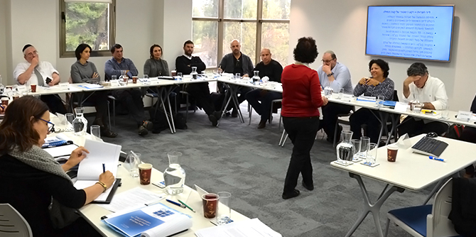

Eighteen Mandel graduates are participating in a 16-session program designed to train graduates to serve as board members of government companies and of educational and social organizations. The first two sessions of the program, which is being conducted under the auspices of the Mandel Graduate Unit, were held over two days, on the last Wednesday and Thursday of December 2017.
The program opened with a lecture by Professor Eugene Kandel, CEO of the non-profit organization Start-Up Nation Central, and a professor of economics and finance at the Hebrew University of Jerusalem’s School of Business Administration. Between 2009 and 2015 Professor Kandel served as the Head of the National Economic Council and as the Economic Adviser to the Prime Minister, and played a central role in all major decisions on economic policy.
Professor Kandel provided a review of the overall socioeconomic situation in Israel, and spoke about the widely-held idea that there is a tension between economic behavior that seeks to advance the interests of specific organizations and between pro-social values, especially when businesses are involved. According to Prof. Kandel, this idea is false; it is rooted in the fact that resources are limited, and thus economic decisions require prioritization and analysis of alternatives based on their cost.
In Professor Kandel’s opinion, the realm of economics is no more or less moral than other disciplines. However, it requires us to face unpleasant issues and to choose between alternatives. Economics holds up a "mirror" to reality, shows the alternatives available for any decision, and clarifies the scale of costs. "Progress has always been driven by economic development and by nurturing the forces that lead it,” he said. “Delegitimizing the forces of market growth will lead to stagnation and the halting of progress. You are about to enter a world that is new to you, in which you will have to make decisions that might make you feel uncomfortable when faced with the possible alternatives.”
Professor Kandel described the uncertainty that characterizes today’s economy and discussed the global trends that influence it. These include the global economic crisis of the first decade of the 21st century, the effects of which are still being felt; the aging of the world’s population; globalization and the shift of the world’s economic center of gravity to the emerging economies of East Asia; and the digital revolution. He explained how the rapid pace of change demands constant and drastic changes in our way of thinking, and requires that we develop behavior that is both strategic and adaptive.

Adv. Ronit Abramson, an expert in business and company law, who is serving as the professional consultant for the program, gave a lecture on company law, reviewing basic concepts such as the composition of the board of directors, its role, and its powers. Rakefet Mossek, director of consultations at the Mandel Graduate Unit, who developed and heads the program, introduced the participants to the program's unique concept, as well as to its goals and its course requirements.
The second day of the program began with a lecture from Adv. Avraham Well, a partner in Fischer, Behar, Chen, Well, Orion, & Co., in which he presented the “triangle of power” in companies: the general assembly, the board of directors, and the management. Adv. Well described the differences between the roles of these three bodies, which can sometimes become blurred.
Adv. Davida Lachman-Messer, formerly a deputy attorney general, gave a lecture that focused on fundamental concepts. These included the types of companies defined in Israel's Companies Law (private companies, public companies, bonds companies, and public benefit companies) and the differences between them; the problem of representation on business boards, as opposed to representation on the boards of non-profit organizations and public benefit companies; and the stock market, the actors involved in it, and the role of institutional investors.
Prof. Pierre Kletz, the founder and director of the Mandel Social Leadership MBA Program at Ben-Gurion University of the Negev, spoke about the changes taking place in the makeup of boards of directors around the world, and about the trend of incorporating practices and methods from the public and private sectors into the non-profit sector. Prof. Kletz noted that while civil society used to be almost entirely unrepresented in private sector boardrooms, the great majority of leading businesses around the world now have representatives from the social sector on their boards.
Dr. Granit Almog-Bareket, the director of the Mandel Graduate Unit, discussed the role of the vision-driven board in educational and social organizations, and noted the new trend for non-profits to engage in for-profit activities alongside their philanthropic activities, which enables them to attain economic independence and stability. Dr. Almog-Bareket described how it is possible to have an impact and to work toward social and educational change by serving on boards of directors. She explained how being a member of a board can help graduates realize their vision, if they identify the area in which they seek to effect change and find a way to join a relevant board in that field.
{kind=link}